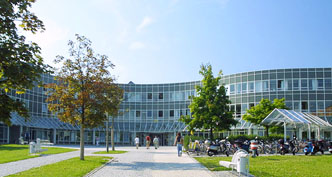

УНИВЕРСИТЕТСКАЯ КЛИНИКА, Г.РЕГЕНСБУРГ
Университетская клиника города Регенсбурга - современная клиника Германии с можеством профилей своей деятельности,
по достоинству завоевавшая уважение среди пациентов, врачей и исследователей по всему миру. В 1962 клиника Регенбурга
начала лечение в Германии и была готова принять своих первых пациентов
По сегодняшний день она является самой сильной по уровню медицинского обслуживания и уровню оборудования в Северо-Баварском
регионе Германии.
Клиника обслеживает круглосуточное лечение в Регенсбурге для двух миллионов жителей, а также для приезжих со всего региона.
Именно в этой клинике лечащий состав имеет большой опыт в диагностике и лечени онколочиских заболеваний. Лечение от рака в Германии
доступно любое - от опухолей молочной железы до лейкеми.
Сайт клиники
УНИВЕРСИТЕТСКАЯ КЛИНИКА Г. РЕГЕНСБУРГА ПРЕДЛАГАЕТ ДИАГНОСТИКУ И ЛЕЧЕНИЕ ПО СЛЕДУЮЩИМ СПЕЦИАЛЬНОСТЯМ:
- Онкология.
- Урология.
- Кардиология.
- Отоларингология (ЛОР-болезни).
- Акушерство и гинекология.
- Лучевая терапия.
- Ревматология и иммунология.
- Общая хирургия и трансплантология.
- Нейрохирургия.
- Офтальмология.
- Педиатрия.
- Неврология.
- Челюстно-лицевая хирургия.
Онкология в Германии характеризуется:.
- точностью исследований;
- современным оборудованием;
- значительным опытом врачей;
- высокой результативностью лечения.
Онкологическое отделение Университета Регенсбург:
-
Сверхточная диагностика является залогом успешного лечения опухолевых заболеваний. Современные лаборатории
онкологического отделения позволяют получать точную картину заболевания и грамотно спланировать лечение
онкологического заболевания, что снижает количество и тяжесть возможных побочных эффектов и улучшает переносимость
лечения и его эффективность.
-
В год в онкологическом отделении проводится около 40 аллогенных трансплантаций красного костного мозга
и 80 аутогенных трансплантаций стволовых клеток
-
Точнейший расчет химиотерапии и доз облучения, современные ускорители, установки "гамма-нож"
и другое передовое техническое оснащение в сочетании с квалификацией лучших врачей-онкологов Германии позволяет достичь высокого процента излечения пациентов.
Урология в Германии представляет одно из ведущих направлений медицины. Самые современные методы диагностики и специалисты экстра-класса способствуют эффективному лечению урологических заболеваний. В Урологической клинике университета Регенсбург работает высококвалифицированный медицинский персонал, обеспечивающий профессиональное лечение и постоянный уход за пациентами, выбравшими для лечения урологических заболеваний Германию.
Пациенты Урологической клиники размещаются в светлых комфортабельных одно- и двухместных (по выбору пациента) палатах с санитарным узлом, душем, телевизором, телефоном и системой непрерывного контроля основных жизненно важных функций. Риск заражения в клинике ВИЧ-инфекцией или гепатитом минимизирован.
Все операции, например операции по поводу рака или аденомы предстательной железы, проводятся в комбинации со специальной техникой, позволяющей сохранить потенцию пациента
В Урологической клинике университета Регенсбург проводятся все виды хирургического и консервативного лечения, в том числе:
-
Эндоскопические исследования, в том числе с помощью видео-уродинамической установки.
-
Полостные операции, в том числе пластические реконструктивные операций при травмах и пороках развития
мочеполовой системы.
-
Эндоскопическая хирургия мочевого тракта.
- Противоопухолевое лечение в урологии:
- Эндоскопическое удаление опухолей.
- Резекция опухолей почек с сохранением органа и его функций.
- Радикальное удаление опухоли предстательной железы.
- Лечение опухолей мочевого пузыря, в том числе с формированием искусственного мочевого пузыря у мужчин и женщин.
- Лапароскопическая хирургия.
- Микрохирургия.
- Фотодинамическая терапия рака мочевого пузыря.
- Лазерная терапия при доброкачественных увеличениях предстательной железы.
- PLFT - Новейшая методика тепловой терапии аденомы предстательной железы.
- HIFU- Ультразвуковая гипертермия при раке предстательной железы.
- Лечение мочекаменной болезни:
- Внеорганное разрушение камней.
- Внутриорганное разрушение камней.
- Эндоскопическое разрушения камней с помощью лазера или ультразвука.
- Хирургическое удаление камней.
-
Лечение недержания мочи.
- Лечение импотенции:
- Медикаментозная терапия.
- При необходимости выполняются различные виды операций, например, введение имплантата или протезирование полового члена.
-
Всевозможные виды химиотерапии и противоболевой терапии.
-
Генная и иммунотерапия.
Исторически сложилось так, что кардиология в Германии была и остается одной из самых сильных и развитых отраслей медицины. В кардиологическом отделении клиники университета Регенсбург проводится:
-
первичная, углубленная диагностика и лечение заболеваний коронарных сосудов сердца;
-
первичная, углубленная диагностика и лечение заболеваний, связанных с нарушением сердечного ритма;
-
медикаментозное лечение, установка электро-кардиостимуляторов и дефибрилляторов;
-
первичная, углубленная диагностика и лечение острой/хронической сердечной недостаточности,
стационарное лечение, интенсивная терапия, подготовка к трансплантации сердца.
ОТОЛАРИНГОЛОГИЯ (ЛОР-БОЛЕЗНИ)
-
Использование специальной техники, позволяющей сохранить возвратный нерв и избежать необходимости проведения
трахеотомии при операциях в области ЛОР-органов (например, операции по удалению рака щитовидной железы).
-
Крайняя низкая кровопотеря в ходе операций делает переливание крови исключением из правил, что позволяет
минимизировать риск заражения такими заболеваниями как СПИД, гепатит и прочее.
-
Количество осложнений, развивающихся после операций, проведенных в ЛОР-клинике, составляет не более 0,03%,
что значительно ниже общепринятого.
В ЛОР-клинике проводятся все виды хирургического и консервативного лечения ЛОР-заболеваний, в том числе:
-
Эндоскопические исследования, в том числе с помощью ЛОР-видеоустановки.
-
Пластические реконструктивные операции при травмах и пороках развития ЛОР-органов.
-
Пластическая хирургия носа и уха.
-
Реконструктивные операции с закрытием трахеостомы при парезе возвратного нерва.
-
Эндоскопическая хирургия ЛОР-органов.
-
Лечение тинитуса (постоянного шума в ушах) с помощью магнитной стимуляции.
-
Лечение врожденной или приобретенной глухоты путем установки слуховых имплантатов:
-
слухового имплантата внутреннего уха;
-
слухового имплантата ствола мозга.
-
Противоопухолевое лечение:
-
эндоскопическое удаление опухолей ЛОР-органов;
-
экономная органосохраняющая резекция щитовидной железы при доброкачественных опухолях;
-
органосохраняющие операции на щитовидной железе при доброкачественных и злокачественных опухолях;
-
трансплантация паращитовидных желез;
-
микрохирургия ЛОР-органов;
-
всевозможные виды химиотерапии и противоболевой терапии.
-
Лечение ЛОР-заболеваний у детей.
Акушерству и гинекологии в Германии уделяется огромное внимание, и поэтому в этой области задействованы высококлассные специалисты,
отличное оборудование и современные технологии, что позволяет утверждать, что клиники Акушерства и гинекологии Германии —
одни из лучших в мире.
Директор Клиники акушерства и гинекологии Университета Регенсбурга профессор, доктор медицины Регенсбург Олаф Ортманн является
одним из ведущих европейских экспертов в области гинекологической онкологии, реконструктивных операций женских половых органов,
ведения осложненных беременностей и родов, а также эндокринологии в Германии. Он является автором уникальных хирургических методик,
руководителем центра рака молочной железы Восточной Баварии.
Онкологическое отделение Университета Регенсбург:
-
Передовые диагностические методы, такие как УЗИ молочных желез на оборудовании с высоким разрешением, цифровая
маммография, магнитно-резонансная томография и т.д.
-
Современный метод мини-лапароскопии, который идеально подходит пациенткам со спаечными заболеваниями и уже
перенесенными операциями. Благодаря методу минимально-инвазивной хирургии, в последние годы специалистами клиники проводится
удаление матки с сохранением шейки.
-
Одно из направлений клиники акушерства и гинекологии Университета Регенсбург — гинекологическая онкология.
-
Точную диагностику и оптимальное оперативное лечение опухолей молочной железы, которые имеют решающее
значение для выздоровления женщины.
-
Центр здоровья женской груди клиники пользуется уважением во всем мире.
-
Успешное применение всех самых современных медикаментозных и оперативных методик гинекологии и эндокринологии
при кистах яичников, нарушении кровообращения органов, эндометриозе, сложностях климактерического периода.
-
Особое внимание уделяется диагностике и лечению бесплодия.
-
Девизом родильного отделения клиники является «Надежные роды в условиях комфорта».
Роды в Германии — это не только максимальная гарантия сохранения жизни и здоровья матери и ребенка.
Это высокий технический и интеллектуальный уровень медицины Германии в сочетании с прекрасным сервисом. Специалисты
клиники предоставляют всестороннюю медицинскую помощь: консультации по планированию семьи, курсы по подготовке к родам
и методикам их облегчения, родовспоможение, наблюдение в послеродовой период и другую необходимую помощь.
Клиника лучевой терапии является передовой в своей области, методики, оборудование и опыт специалистов которой позволяют проводить лечение на высоком мировом уровне. Перечень оборудования, которым обладает клиника, позволяет решать самые сложные проблемы с минимальными побочными эффектами:
- 2 линейных ускорителя PRIMUS компании SIEMENS c MLC оснащенный 6 и 16 MV фотонов и 6-21 MeV электронов;
- 1 линейный ускоритель Synergy компании Elekta с Beam модулятором и плавающим столом;
- стереосистема Micro- Multileaf m3, система планирования Brainscan и системы контроля положения, инвазивное кольцо и неинвазивные маски для головы и шейного отдела;
- КТ-планирование SIEMENS Somatom Sensation Open;
- 3D планирование терапии;
- симулятор SIEMENS Simview NT;
- система облучения всей площади тела.
РЕВМАТОЛОГИЯ И ИММУНОЛОГИЯ
В отделении Ревматологии и иммунологии Университета Регенсбург проводится диагностика и лечение:
- ревматоидные артриты;
- кристаллоартропатии, особенно мироскопическая кристаллодиагностика при подагре и псевдо-подагре;
- коллагенозы, особенно системный Lupus erythematodes, склеродермия, дерматомиозит, синдром Сьогрена (Sjogren);
- васкулиты, особенно болезнь Morbus Wegener, синдром Хург-штраусса (Churg-Strauss), артрит Такаясу,
ревматическая полимиалгия, Panarteritis nodosa;
- спондилоартриды, болезнь Бехтерева, артритный псориаз, артрит при хронических воспалительных
заболеваниях кишечника, реактивный артрит;
- синдром иммунодефицита, особенно синдром дефицита антител;
- ранняя диагностика и терапия воспалительных заболеваний суставов
Основными терапевтическими методами отделения Ревматологии и иммунологии являются:
- дифференцированное лечение иммуномодулированными медикаментами, включая биологики (среди прочего и анти - TNF-медикаменты, анти - IL1, Rituximab, Abatacept, Tocilizumab);
- интервенционально нацеленные инъекции противовоспалительными медикаментами в суставах с активным воспалением;
- подкожные и внутривенные методы терапии с иммуноглобулинами, плазмаферезом и иммуноадсорбцией;
- дифференциальные медикаментозные антиболевые методы терапии;
- нацеленная физио- и эрготерапия;
- психосоматические методы лечения обученными дипломированными психологами;
- сертифицированные курсы для пациентов с ревматоидным артритом, Morbus Bechterew и фибромиальгией;
- мультимодальные ревматологические комплексные терапевтические подходы.
ТРАНСПЛАНТОЛОГИЯ И ОБЩАЯ ХИРУРГИЯ
Трансплантационная хирургия в Германии находится на очень высоком уровне развития. Директор Клиники трансплантологии
Университета Регенсбург, профессор, доктор медицины Юрген Шлитт является одним из ведущих европейских экспертов
в области общей и трансплантационной хирургии, автором многих уникальных хирургических методик и руководителем
Восточно-Баварского центра трансплантации.
Клиника трансплантологии многие годы специализируется в области лечения онкологических заболеваний,
реконструктивных операций кишечника, заболеваний печени, трансплантации органов, лечения пациентов с
врожденными или приобретенными заболеваниями сосудов. Уровень профессионализма специалистов Клиники
трансплантологии Университета Регенсбург позволяет помогать пациентам даже с самыми тяжелыми диагнозами.
Директор Департамента нейрохирургии Университета Регенсбург, профессор, доктор медицины Александер Бравански
является одним из ведущих экспертов в области лечения опухолей головного мозга и основания черепа, а также хирургии сосудов головного мозга, автором уникальных хирургических методик, успешно применяемых в нейрохирургии в Германии.
Ежегодно в Клинике нейрохирургии Университета Регенсбург получают лечение 1.700 стационарных и 3.500 амбулаторных
пациентов и выполняется 1.600 операций.
В КЛИНИКЕ НЕЙРОХИРУРГИИ МНОГИЕ ГОДЫ УСПЕШНО ПРАКТИКУЕТСЯ:
- методика хирургического лечения аневризм сосудов головного мозга в условиях глубокого охлаждения тела;
- реконструкция сосудов мозга;
- лечение пациентов со сложными черепно-мозговыми травмами;
- детская нейрохирургия;
- хирургия позвоночника.
Офтальмология в Германии — это точная диагностика и лечение самого широкого спектра глазных заболеваний,
а также посттравматических осложнений и повреждений. Клиника офтальмологии Университета Регенсбург располагает
лучшими врачами-экспертами, современнейшим оборудованием и технологиями, а также ведет научно-исследовательскую
деятельность.
Особое внимание в Клинике офтальмологии уделяется диагностике глазных болезней, так как верно установленная
причина заболевания является основой для результативного лечения. В Клинике офтальмологии используются следующие методы
диагностики:
- тонометрия роговицы;
- электрокардиограмма глаза;
- ультразвуковая биомикроскопия;
- оптическая когерентная томография;
- микроскопия эндотелия роговицы;
- электроретинография;
- лазерное допплеровское измерение кровоснабжения;
- лазерная томография и многое другое.
В Клинике офтальмологии выполняется весть спектр хирургических и консервативных лечебно-диагностических мероприятий,
основными из которых являются:
- лечение катаракты;
- лечение глаукомы;
- лечение заболеваний глазных век (коррекция аномалий век, удаление опухолей, косметические операции);
- рефрактерная хирургия (исправление зрения оперативным путем с применением лазера);
- лечение заболеваний сетчатки;
- коррекция косоглазия;
- нейроофтальмология;
- лечение заболеваний орбиты глаз;
- восстановление конъюнктивы с коррекцией поверхности при тяжелых повреждениях;
- зрительная реабилитация;
- имплантация искусственного хрусталика;
- восстановление зрения путем имплантации электронного зрительного чипа на сетчатку;
- лечение сложных травматических поражений глаза, а также многих других заболеваний.
Клиника офтальмологии Университета Регенсбург известна и тем, что предлагает эффективное лечение возрастной
макулодистрофии сетчатки как с применением хорошо зарекомендовавших себя методик (лазерная терапия,
фотодинамическая терапия, инъекционная терапия, хирургическое лечение), так и использованием экспериментальных
методик в рамках проводимых клинических исследований.
Детская офтальмология - особое направление Клиники офтальмологии Университета Регенсбург, ведь глазные
болезни детей отличаются от заболеваний взрослых. Специалисты клиники проводят специализированные консультации
для плохо видящих или слепых детей и успешно лечат:
- детскую глаукому;
- помутнение хрусталика;
- ретинопатию у недоношенных детей;
- ретинобластому;
- увеит;
- косоглазие и другие нарушения зрения.
Для каждого маленького пациента созданы все условия для лечения и комфортного пребывания в клинике.
Клиника детской и юношеской медицины Университета Регенсбург проводит как общетерапевтическую диагностику и
лечение, так и диагностику и лечение в других направлениях: кардиология, пульмонология, гастроэнтерология,
эндокринология, нефрология, вирусология, иммунология, неврология, онкология. Основными направлениями деятельности
клиники являются:
- неотложная помощь новорожденным;
- неотложная помощь младенцам, детям и подросткам;
- детская кардиология;
- неврологическая педиатрия и эпилептология;
- педиатрическая гастроэнтерология;
- педиатрическая диабетология;
- помощь при муковисцедозе;
- педиатрическая эндокринология.
Основными направлениями деятельности Клиники неврологии университета Регенсбург является диагностика и лечение
заболеваний центральной и периферической нервной системы:
- эпилепсия;
- >заболевания сосудов мозга и инсульт;
- головная боль;
- нейроcонография и создание функциональных изображений мозга;
- нейроиммунология и рассеянный склероз;
- нейромускулаторные заболевания;
- опухоли центральной нервной системы;
- дегенеративные заболевания центральной нервной системы;
- проблемы регенерации;
- генная терапия.
ЧЕЛЮСТНО-ЛИЦЕВАЯ ХИРУРГИЯ
Клиника челюстно-лицевой хирургии Университета Регенсбур располагает палатами для стационарных больных общей
численностью 28 коек. В интердисциплинарном реанимационном отделении проводится терапия пациентов с тяжелыми
ранениями в тесном сотрудничестве с другими отделениями клиники (нейрохирургией, травматологией и т.д.).
В Клинике челюстно-лицевой хирургии оказывается следующий спектр услуг:
- травматология;
- пластическая и восстановительная хирургия;
- имплантология;
- хирургия черепно-лицевых аномалий;
- дисгнатия/дефекты челюсти;
- расщелины губы, челюсти и нёба;
- заболевания височно-нижнечелюстного сустава;
- опухолевая хирургия;
- операции на нервах и челюстно-лицевой области;
- гнойно-септическая челюстно-лицевая хирургия;
- костно-пластическая хирургия;
- дентально-альвеолярная хирургия.
Уважаемые клиенты, наша компания в сжатые сроки сможет профессионально организовать диагностику и лечение при
любых видах заболеваний и получить качественное медицинское обслуживание в университетской клинике Регенсбурга при
той же стоимости, что и для граждан Германии